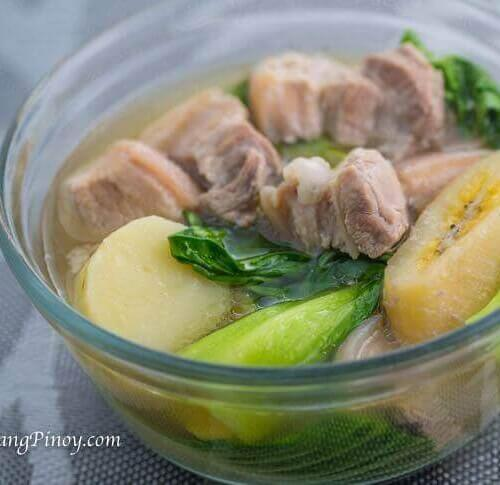

Back to Home Page

Pork Nilaga (which literally translates to "boiled pork") is the ultimate Filipino soul food. It is a clear, savory broth soup that is famous for being simple, clean, and incredibly warming—especially on a rainy day or when you're feeling a bit under the weather.
Unlike Adobo, which is bold and tangy, Nilaga is all about the natural sweetness of the meat and vegetables coming together in a light, peppery broth.
Ingredients
- 1 kg Pork Belly or Spare Ribs
- 1 large Onion, quartered
- 1 tbsp Whole Black Peppercorns
- 2 tbsp Fish Sauce (Patis)
- 2 Potatoes, quartered
- 2 Saba Bananas (optional)
- 2 pieces Corn on the cob
- 1 bunch Green Beans
- 1 head of Pechay or Cabbage
Steps
- Boil pork in water and skim off the scum from the surface.
- Add onions and peppercorns, then simmer until the meat is tender.
- Add the potatoes, corn, and bananas; cook until softened.
- Season with fish sauce or salt to taste.
- Add the green vegetables and cook for 2 minutes.
- Serve hot with steamed white rice.